Introduction
In this worksheet, we will discuss how to change and customize themes.
We will be using the R package tidyverse, which
includes ggplot() and related functions. We will also be
using the packages cowplot for themes and the package
palmerpenguins for the penguins
dataset.
```{r library-calls}
# load required library
library(tidyverse)
library(cowplot)
library(palmerpenguins)
```
We will be working with the dataset penguins containing
data on individual penguins on Antarctica.
```{r penguins}
penguins
```
# A tibble: 344 × 8
species island bill_length_mm bill_depth_mm flipper_…¹ body_…² sex year
<fct> <fct> <dbl> <dbl> <int> <int> <fct> <int>
1 Adelie Torgersen 39.1 18.7 181 3750 male 2007
2 Adelie Torgersen 39.5 17.4 186 3800 fema… 2007
3 Adelie Torgersen 40.3 18 195 3250 fema… 2007
4 Adelie Torgersen NA NA NA NA <NA> 2007
5 Adelie Torgersen 36.7 19.3 193 3450 fema… 2007
6 Adelie Torgersen 39.3 20.6 190 3650 male 2007
7 Adelie Torgersen 38.9 17.8 181 3625 fema… 2007
8 Adelie Torgersen 39.2 19.6 195 4675 male 2007
9 Adelie Torgersen 34.1 18.1 193 3475 <NA> 2007
10 Adelie Torgersen 42 20.2 190 4250 <NA> 2007
# … with 334 more rows, and abbreviated variable names ¹flipper_length_mm,
# ²body_mass_gReady-made themes
Let’s start with this simple plot with no specific styling.
```{r penguins-simple}
ggplot(penguins, aes(flipper_length_mm, body_mass_g, color = species)) +
geom_point(na.rm = TRUE) # na.rm = TRUE prevents warning about missing values
```
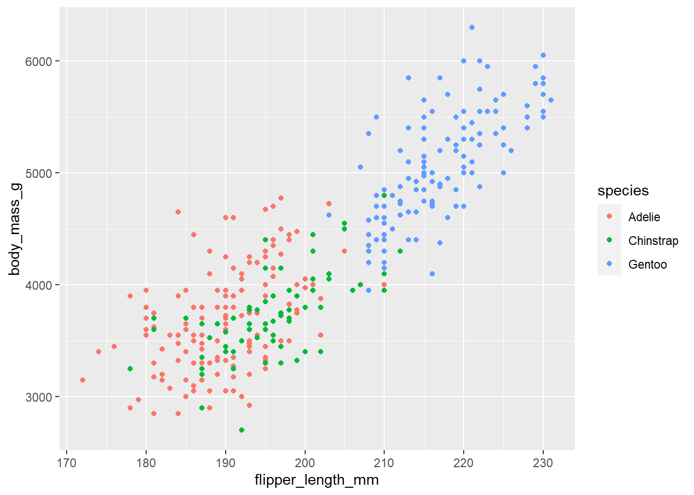
The default ggplot theme is theme_gray(). Verify that
adding this theme to the plot makes no difference in the output. Then
change the overall font size by providing the theme function with a
numeric font size argument, e.g. theme_gray(16).
```{r penguins-simple-theme-gray}
ggplot(penguins, aes(flipper_length_mm, body_mass_g, color = species)) +
geom_point(na.rm = TRUE) +
___
# solution
ggplot(penguins, aes(flipper_length_mm, body_mass_g, color = species)) +
geom_point(na.rm = TRUE) +
theme_gray()
ggplot(penguins, aes(flipper_length_mm, body_mass_g, color = species)) +
geom_point(na.rm = TRUE) +
theme_gray(16)
```
 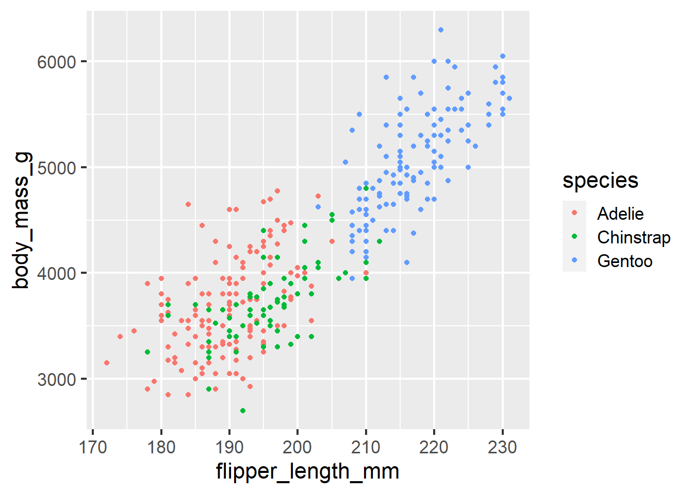
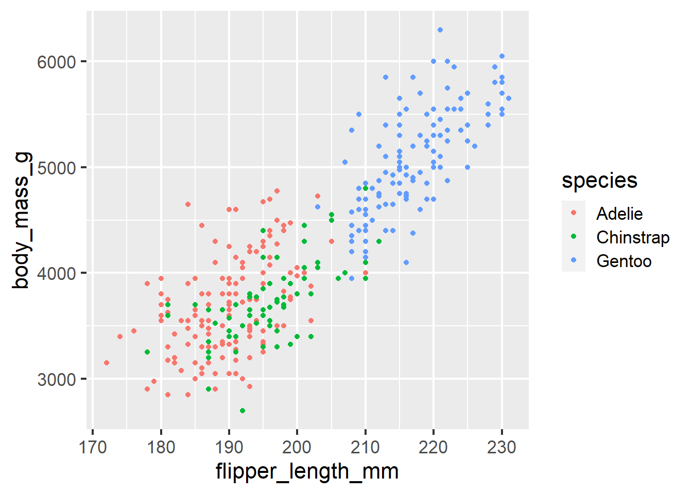
The ggplot2 package has many built-in themes,
including theme_minimal(), theme_bw(),
theme_void(), theme_dark(). Try these
different themes on the above plot. Also try again changing the font
size. You can see all themes provided by ggplot2 here:
https://ggplot2.tidyverse.org/reference/ggtheme.html
```{r penguins-simple-theme-ggplot2}
# build all the code for this exercise
# solution
ggplot(penguins, aes(flipper_length_mm, body_mass_g, color = species)) +
geom_point(na.rm = TRUE) +
theme_bw(12)
ggplot(penguins, aes(flipper_length_mm, body_mass_g, color = species)) +
geom_point(na.rm = TRUE) +
theme_minimal(14)
ggplot(penguins, aes(flipper_length_mm, body_mass_g, color = species)) +
geom_point(na.rm = TRUE) +
theme_void()
```
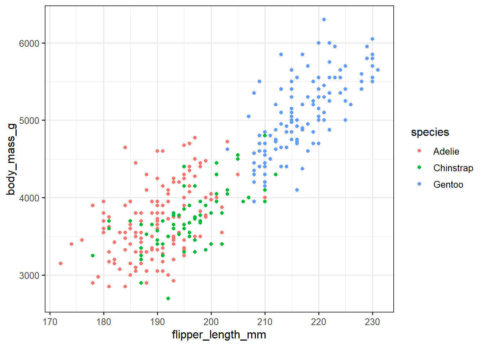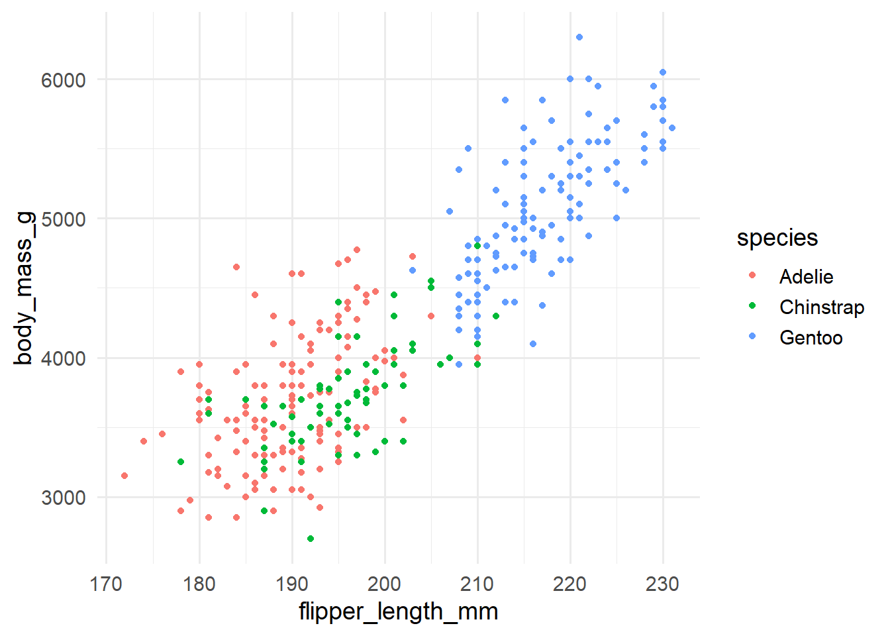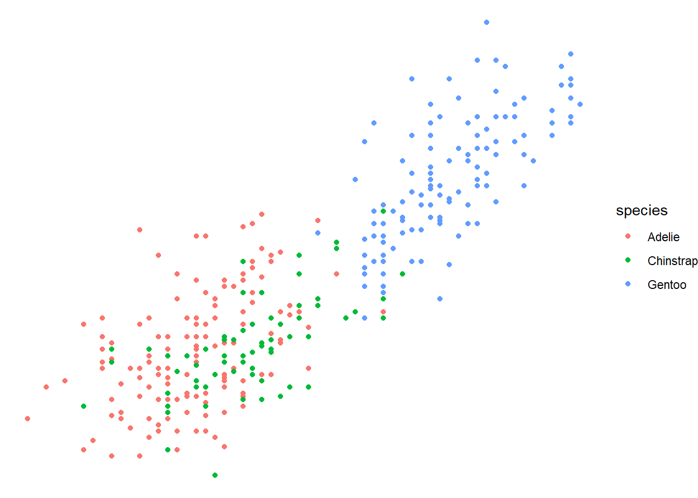
Many other packages also provide themes. For example, the
cowplot package provides themes
theme_half_open(), theme_minimal_grid(),
theme_minimal_hgrid(), and
theme_minimal_vgrid(). You can see all
cowplot themes here: https://wilkelab.org/cowplot/articles/themes.html
```{r penguins-simple-theme-cowplot}
# build all the code for this exercise
# solution
ggplot(penguins, aes(flipper_length_mm, body_mass_g, color = species)) +
geom_point(na.rm = TRUE) +
theme_half_open()
ggplot(penguins, aes(flipper_length_mm, body_mass_g, color = species)) +
geom_point(na.rm = TRUE) +
theme_minimal_grid()
ggplot(penguins, aes(flipper_length_mm, body_mass_g, color = species)) +
geom_point(na.rm = TRUE) +
theme_minimal_hgrid()
```
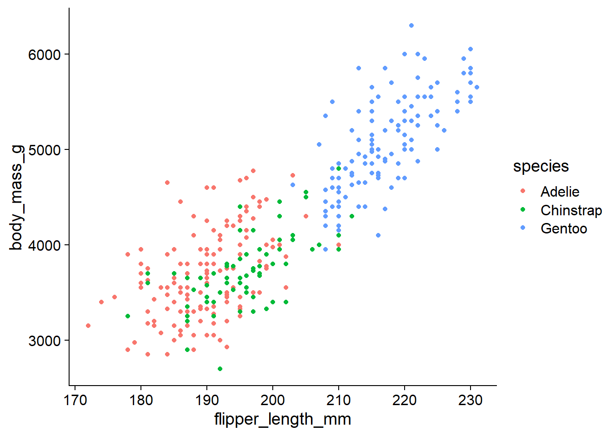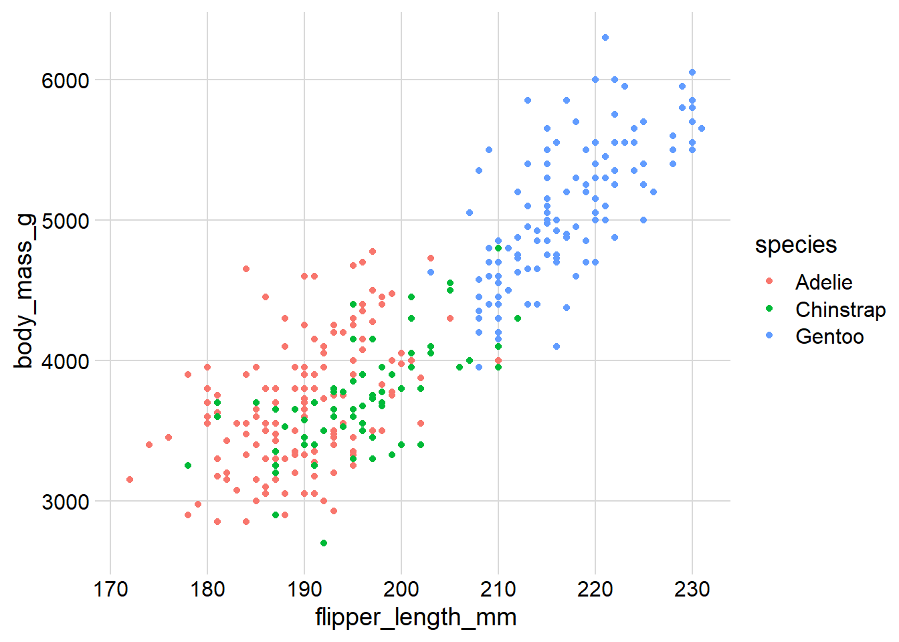
Compare the visual appearance of theme_minimal() from
ggplot2 to theme_minimal_grid() from
cowplot. What similarities and differences to you
notice? Which do you prefer? (There is no correct answer here, just be
aware of the differences and of your preferences.)
```{r penguins-simple-theme-minimal}
# build all the code for this exercise
# solution
ggplot(penguins, aes(flipper_length_mm, body_mass_g, color = species)) +
geom_point(na.rm = TRUE) +
theme_minimal()
ggplot(penguins, aes(flipper_length_mm, body_mass_g, color = species)) +
geom_point(na.rm = TRUE) +
theme_minimal_grid()
```
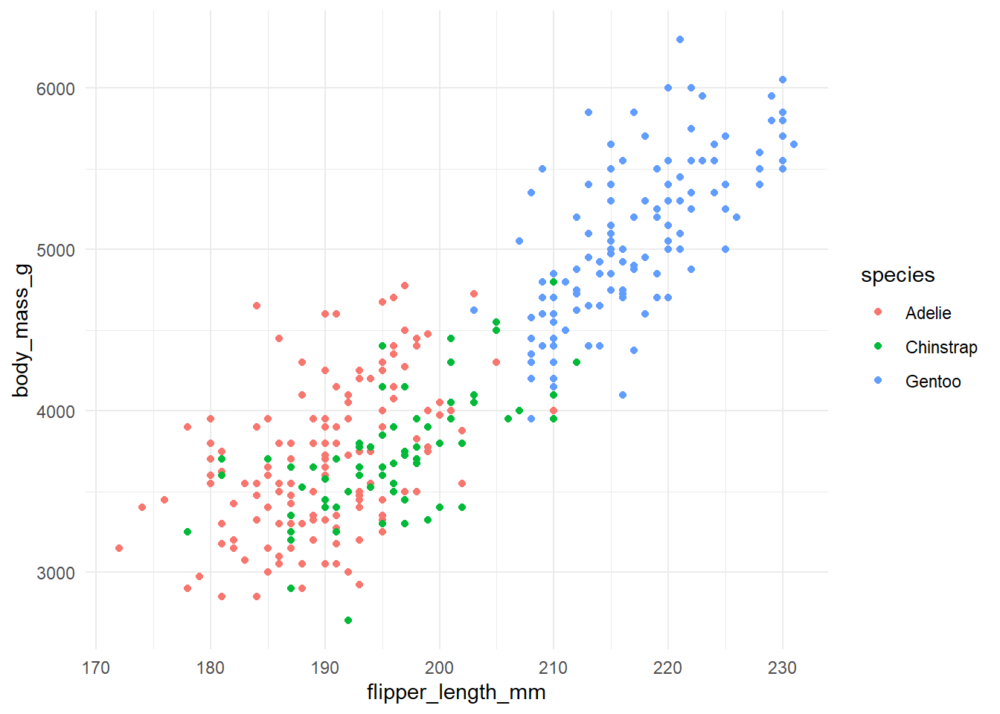
Modifying theme elements
You can modify theme elements by adding a theme() call
to the plot. Inside the theme() call you specify which
theme element you want to modify (e.g., axis.title,
axis.text.x, panel.background, etc) and what
changes you want to make. For example, to make axis titles blue, you
would write:
```{r theme-example}
theme(
axis.title = element_text(color = "blue")
)
```
There are many theme settings, and for each one you need to know what
type of an element it is (element_text(),
element_line(), element_rect() for text,
lines, or rectangles, respectively). A complete description of the
available options is available at the ggplot2 website:
https://ggplot2.tidyverse.org/reference/theme.html
Here, we will only try a few simple things. For example, see if you can make the legend title blue and the legend text red.
```{r penguins-simple-legend}
# make the legend title blue and the legend text red
ggplot(penguins, aes(flipper_length_mm, body_mass_g, color = species)) +
geom_point(na.rm = TRUE)
# solution
ggplot(penguins, aes(flipper_length_mm, body_mass_g, color = species)) +
geom_point(na.rm = TRUE) +
theme(
legend.title = element_text(color = "blue"),
legend.text = element_text(color = "red")
)
```
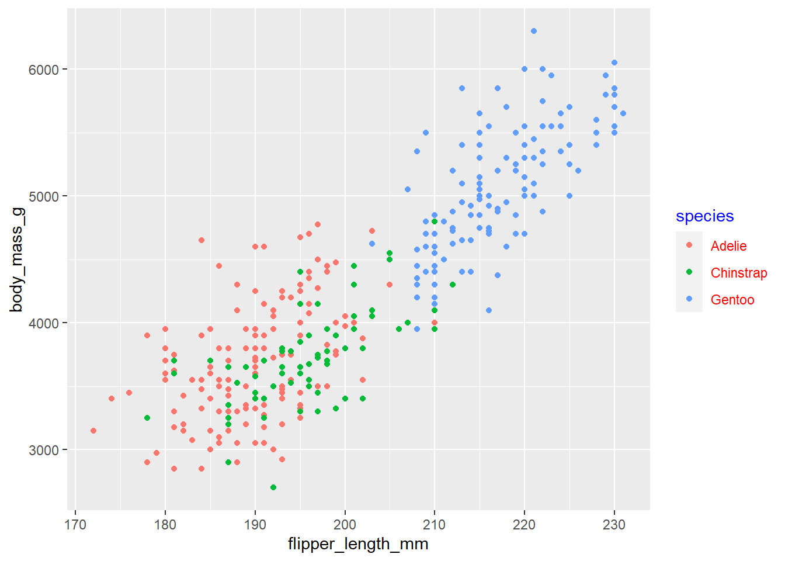
Now color the area behind the legend in "aliceblue".
Hint: The theme element you need to change is called
legend.background. There is also an element
legend.box.background but it is only visible if
legend.background is not shown, and in the default
ggplot2 themes that is not the case.
```{r penguins-simple-legend-background}
# build all the code for this exercise
# solution
ggplot(penguins, aes(flipper_length_mm, body_mass_g, color = species)) +
geom_point(na.rm = TRUE) +
theme(
legend.background = element_rect(fill = "aliceblue")
)
```
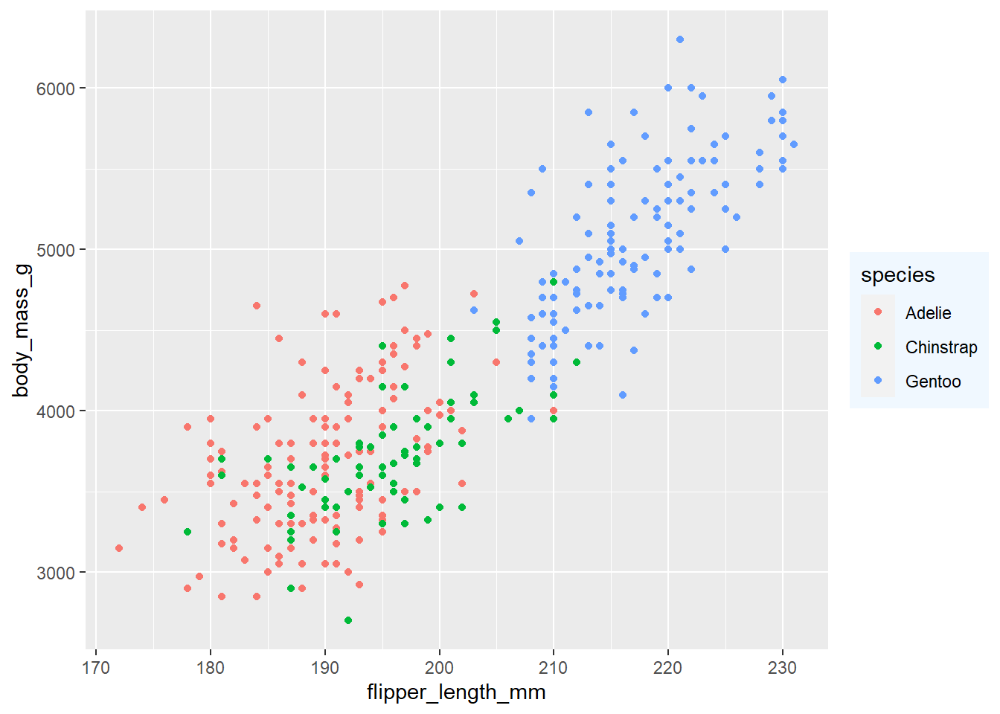
Another commonly used feature in themes are margins. Many parts of
the plot theme can understand customized margins, which control how much
spacing there is between different parts of a plot. Margins are
typically specified with the function margin(), which takes
four numbers specifying the margins in points, in the order top, right,
bottom, left. So, margin(10, 5, 5, 10) would specify a top
margin of 10pt, a right margin of 5pt, a bottom margin of 5pt, and a
left margin of 10pt.
Try this out by setting the legend margin (element
legend.margin) such that there is no top and no bottom
margin but 10pt left and right margin.
```{r penguins-simple-margin}
# build all the code for this exercise
# solution
ggplot(penguins, aes(flipper_length_mm, body_mass_g, color = species)) +
geom_point(na.rm = TRUE) +
theme(
legend.background = element_rect(fill = "aliceblue"),
legend.margin = margin(0, 10, 0, 10)
)
```
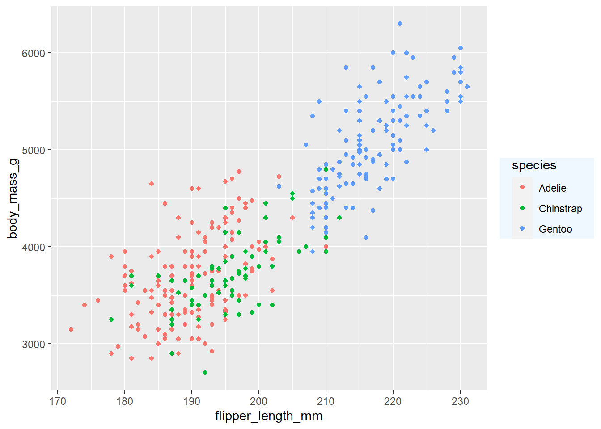
There are many other things you can do. Try at least some of the following:
- Change the horizontal or vertical justification of text with
hjustandvjust. - Change the font family with
family.1 - Change the panel grid. For example, create only horizontal lines, or only vertical lines.
- Change the overall margin of the plot with
plot.margin. - Move the position of the legend with
legend.positionandlegend.justification. - Turn off some elements by setting them to
element_blank().
1 Getting fonts to work well can be tricky in R. Which
specific fonts work depends on the graphics device and the operating
system. You can try some of the following fonts and see if they work on
app.terra.bio: "Palatino", "Times",
"Helvetica", "Courier",
"ITC Bookman", "ITC Avant Garde Gothic",
"ITC Zapf Chancery".
Writing your own theme
You can write a theme by
```{r echo = TRUE, eval=TRUE}
theme_colorful <-
theme_bw() +
theme(
text = element_text(color = "mediumblue"),
axis.text = element_text(color = "springgreen4"),
legend.text = element_text(color = "firebrick4")
)
```
Hint: Do you have to add theme_colorful
or theme_colorful()? Do you understand which option is
correct and why? If you are unsure, try both and see what happens.
```{r penguins-simple-theme-colorful}
# build all the code for this exercise
# solution
ggplot(penguins, aes(flipper_length_mm, body_mass_g, color = species)) +
geom_point(na.rm = TRUE) +
theme_colorful
```
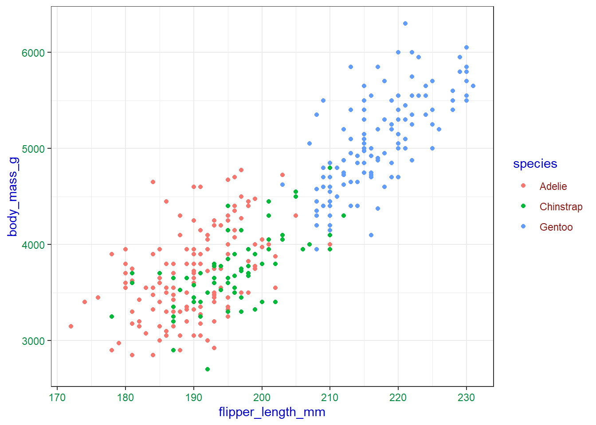
Now write your own theme and then add it to the penguing plot.
```{r penguins-simple-theme-box}
# build all the code for this exercise
# solution
mytheme <- theme_minimal_grid() +
theme(
panel.border = element_rect(size = 1, color = "black"),
legend.box.background = element_rect(size = 0.5, color = "black")
)
ggplot(penguins, aes(flipper_length_mm, body_mass_g, color = species)) +
geom_point(na.rm = TRUE) +
mytheme
```
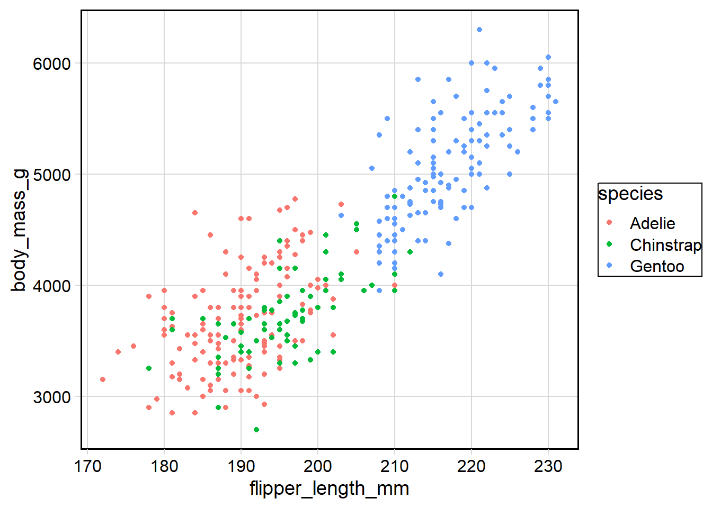